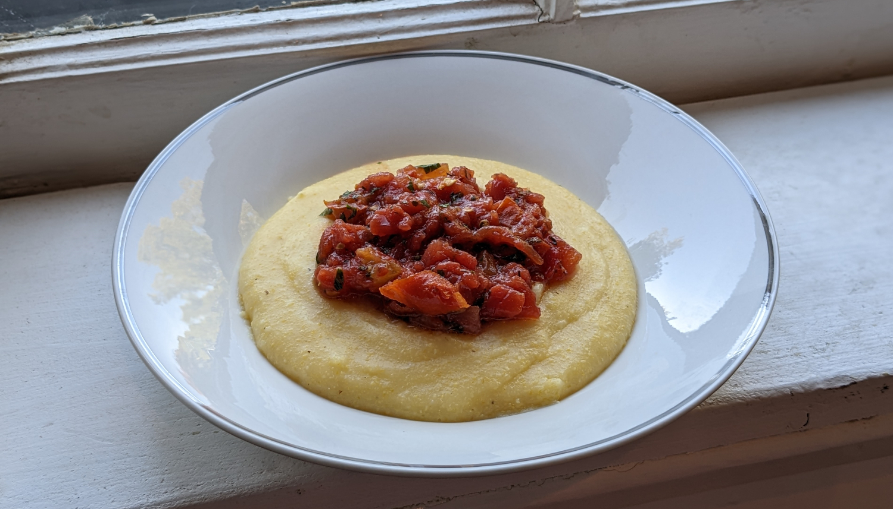

Polenta

Author: Two Kooks in the Kitchen |
Cooked: October 8, 2022
Yields: 5 Servings | Prep Time: 5 Minutes | Cook Time: 40 Minutes
Ingredients
- 4 1/2 c. water
- 1 tsp salt
- 1 c. polenta or cornmeal
- 2 Tbs unsalted butter
- 1/2 c. grated Parmesan cheese
- Salt to taste --------------------------
- 28-ounce can whole peeled tomatoes (San Marzano)
- 1 1/2 Tbs olive oil
- 3 Tbs finely chopped herbs (combination of parsley, basil, thyme, oregano, etc.)
- 1/4 tsp red pepper flakes
- Pinch of sugar
- Half lemon
- Salt and pepper to taste
Polenta
Tomatoes
Directions
- Bring water and salt to a boil in a medium saucepan. Note, the polenta will puff up, so make sure to give yourself enough room with a big enough pot.
- Slowly whisk in polenta/cornmeal and continue whisking for 2 minutes.
- Lower heat to a simmer and whisk continuously for 5 minutes.
- Cover and cook over low heat stirring with a spoon every 5 minutes while making sure to scrape the sides and bottom of the pot. Continue this process for 30-40 minutes until the polenta is creamy and thick.
- Remove from heat and add butter and Parmesan. Then add salt and pepper to taste. --------------------------
Polenta
- While polenta is cooking, dump can of tomatoes in a strainer and squeeze to eliminate most of the juices. Roughly chop the tomatoes and place in a bowl.
- Add oil, herbs, red pepper, and sugar and combine well.
- Add lemon juice to reach desired acidity and then add salt and pepper to taste.
- Serve directly over top of polenta.
Tomatoes
Additional Notes
- Wasn't crazy about the canned tomatoes. Reminded me a little of a deep dish pizza. Would have much rather used fresh tomatoes. Maybe even make a Caprese salad with some balsamic vinegar?
- The polenta would likely have been better if some dairy (milk or cream) was added in place of some of the water. I've even read about using some broth instead which could add some nice flavor.
- I've read that people will chill the polenta, cut it into squares, and sauté the squares in butter. Could be an interesting way to serve them.